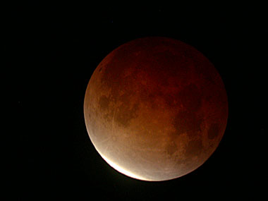

Maansverduistering ‘Live’
zondag 9 november 2003 | Natuur
… vanop ons terras om 02.03 ;-)
Voor een iets professionelere kijk op het gebeuren, gelieve u snel te begeven naar de webcam van MIRA in Grimbergen. Je kan ook gewoon je hoofd naar buiten steken natuurlijk. Bestudeer ook even hun artikel over deze jongste maansverduistering.
De totale maansverduistering start om 2u06. Om 5u21 gaat alles weer zijn gewone kosmische gangetje.
